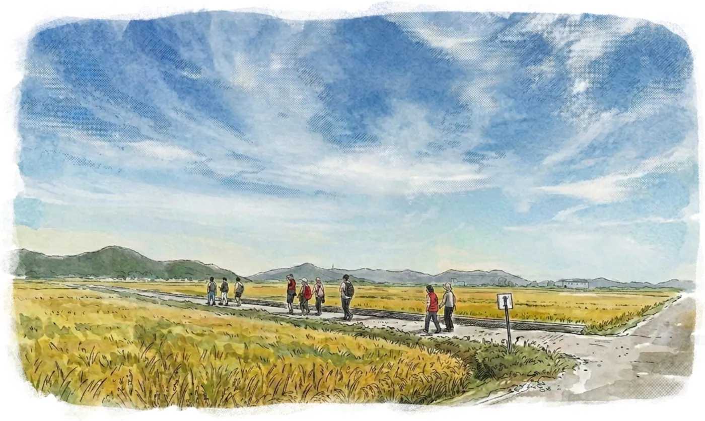

의 섬은 사라지는 것들에 대한 질문에서 시작합니다. 예술가와 기획자, 시민이 함께 ‘소멸’을 응시하고, 그 자리에 시적인 공간을 만들어내는 프로젝트입니다.

2025년, 한국·싱가포르·이탈리아의 예술가와 기획자가 강화도에 모여 길을 걷고, 역사적·문화적 장소를 찾고, 사람들을 만났습니다. 각자의 방식으로 ‘여기서 무엇이 사라지고 있는가’를 감각한 리서치의 해였습니다.
2026년, 일본과 말레이시아의 예술가가 합류해 다시 강화에 모입니다. 작년에 발견한 질문을 안고, 사라짐의 자리에 시적 장소를 만들고 그 상상의 공간이 섬 위에 천천히 쌓여가기를 바랍니다.
두 개의 육각형은 이 프로젝트의 상징입니다. 서로 맞물리며 새로운 공간을 만드는 육각형처럼, 각자의 ‘나의 섬’이 이어져 ‘우리의 섬’이 됩니다. 육각형에는 무엇이든 들어갈 수 있습니다. 나의 섬, 우리의 섬, 나무의 섬, 섬섬의 섬, 바람의 섬, 갯벌의 섬, 쿠키의 섬…… 당신의 강화도는 무엇의 섬인가요?
올해 프로젝트는 10월 25일부터 11월 8일까지 강화에서 진행됩니다. 11월 6일–8일에는 관객이 참여할 수 있습니다. 자세한 내용은 이 페이지에 계속 업데이트됩니다.
앤드씨어터는 강화도를 기반으로 활동하는 예술 단체입니다. 2018년 강화로 이주한 뒤 동료 예술가들과 ‘없는극장’과 ‘없는극장 레지던시’를 만들며 지역과 예술의 새로운 관계를 모색해 왔습니다. 교동도 실향민 할머니들의 기억을 따라 걷는 이동형 공연 〈강화도산책: 평화도큐먼트〉(2023), 초대 예술가들이 섬에 머물며 작업하는 〈잠시섬 연극제〉(2021–)를 만들었습니다. 사라져 가는 것들 속에서도 여전히 살아 있는 감각과 보이지 않는 연결을 믿으며, 강화에서 예술의 새로운 형태를 실험하고 있습니다.
연리목 + 최영두
GANGHWA, KOREA
연리목은 인디 록밴드 ‘눈뜨고코베인’으로 음악을 시작해 20여 년간 여러 앨범을 발표한 음악가입니다. 강화도에서 10년째 두 아이를 키우며 예술과 일상이 분리되지 않는 삶을 살고 있습니다. 국악기와 밴드를 결합한 ‘타니모션’, 무용·연극·영화 음악 작곡을 거쳐 2023년부터 자기 이름으로 솔로 작업을 시작했고, 전화기를 통해 관객의 기억과 음악이 교차하는 사운드 설치 「회상의 회상」을 선보였습니다. 가족과 함께 거리 음악극단 ‘음악당 달다’도 운영합니다. 그에게 음악은 사라짐 속에 머무는 시간의 예술입니다.
최영두는 기타를 연주하고 음악을 만드는 사람입니다. 밴드 ‘눈뜨고코베인’에서 기타를 연주하고, 프로젝트 팀 ‘209km’에서 음악을 만듭니다. 자기 이름으로는 일상에서 경험하고 느낀 것을 음악의 언어로 옮기는 [Project], [기록] 시리즈를 이어 가고 있습니다. 발전 가능성 있는 아이디어를 발굴하고, 흔들리지 않는 주제를 고르고, 다양성을 받아들여 어떤 형태로든 변할 수 있는 유연한 방법을 고민하며 음악에서 연극과 영상으로 창작의 범위를 넓혀 가고 있습니다.
테아트린게스타치오네
NAPLES, ITALY
안나 게수알디 · 지오바니 트로노
2006년 나폴리에서 게수알디|트로노가 세운 다학제 공연예술 단체로, 2007년부터 드라마투르그 로레타 메시티가 함께하고 있습니다. 과정의 공유를 중시하며 교도소, 이민자, 노인, 장애인 등 취약한 환경에 놓인 사람들과 작업해 왔습니다. 시민이 15일 동안 자기 집을 예술가에게 내어 주는 공동체 축제 〈알토페스타〉, 인구 소멸 위기에 놓인 산간 마을들을 공연과 라디오로 다시 잇는 〈일리냐 다리야(공중선 거리)〉를 통해, 예술을 타인과 공간을 다시 연결하는 사회적 행위로 실천합니다.
희와래
GANGHWA, KOREA
김나래 · 이건희
시각예술가 김나래와 이건희가 이끄는 커뮤니티 아트 기반의 예술 단체로, 서울에서 강화로 이주한 뒤 기획·교육·공간 운영을 이어 오고 있습니다. 2020년부터 이주 여성, 사회복지사, 강화의 돈대처럼 보이지 않던 존재와 장소에 주목해 왔습니다. 2023년부터는 부속섬 아차도에서 노년 여성 주민들과 산책하고, 함께 농사짓고, 거둔 작물로 음식을 나누며 예술을 ‘생활의 리듬’으로 실천합니다. 핵심어는 ‘돌봄’. 돈대의 돌이 허물어진 자리에 나무와 텃밭이 자라는 풍경처럼, 사라짐 속에서 피어나는 생명의 가능성을 탐구합니다.
드라마박스 (헝러운)
SINGAPORE
예술을 통한 사회 변화를 지향하는 싱가포르의 사회참여형 예술 단체입니다. 창립자 헝러운은 30년간 예술감독을 맡은 뒤 그 자리를 동료들에게 넘겼고, 지금은 큐레이터, 드라마투르그, 예술감독으로 활동합니다. 단체는 20여 년간 ‘땅, 공간, 장소’를 주제로 도서관, 주택가, 거리 등 극장 밖에서 다언어 공연을 만들어 왔습니다. 장기 프로젝트 〈프로젝트 12〉는 본섬에서 배로 12분 거리, 인구가 3,000명에서 28명으로 줄어든 섬 플라우 우빈에서 주민들과 함께 생태와 자본, 시간의 문제를 탐구합니다.
츄 쇼 엔
SINGAPORE
‘몸의 관점에서 세계를 바라보는 메이커’이자 커뮤니티 아트 진행자로, 예술을 통해 사람과 공간, 공동체를 잇습니다. 주로 취약 계층 가정의 아이들, 그가 ‘숨겨진 아이들’이라 부르는 이들과 작업하며, 보이지 않음을 소멸의 전조로 보고 그 존재를 드러내는 일을 해 왔습니다. 싱가포르의 한 동네에서 2년 반 동안 매주 같은 시간, 같은 자리에서 ‘커뮤니티 퍼포먼스 나이트’를 열며 장소와 실천, 사람에 깊이 스며드는 방식을 다졌습니다. 그에게 예술은 “가장 중요하면서도 동시에 가장 중요하지 않은 것”입니다.
오랑오랑 드럼 씨어터
PENANG, MALAYSIA
리우 후이민 · 리우 즈이 · 츄 순헹
2013년 리우 즈이와 츄 순헹(보이즈 츄)이 함께 세운 말레이시아의 공연 그룹입니다. 민속 공연 ‘24절기 북’에서 출발해, 드러머-퍼포머가 이야기꾼과 음악가, 신체 배우 사이를 넘나드는 ‘드럼 시어터’를 탐구하며 소리와 몸의 상호작용을 핵심 언어로 삼습니다. 프랑스, 헝가리, 호주, 폴란드, 대만, 한국 등의 축제에서 공연했고, 보르도와 베네치아에서 공연예술을 공부한 리우 후이민이 함께합니다. 지금은 과수원 속 공간에서 농사와 공연예술을 결합하는 〈샨-카-라〉 프로젝트에 힘을 쏟고 있습니다.
소노노치
KYOTO, JAPAN
나카타니 가즈요 · 후지와라 미호 · 나가사와 모에
소노노치는 일본에서 공연예술을 중심으로, 시각예술과 현대미술의 요소를 아우르며 활동하는 그룹입니다. 공간에 담긴 방대한 정보를 관객 안에 흐르는 시간과 기억으로 잇는 독특한 연출로, 고유한 시선에서 사회와의 접점을 탐구하는 작품을 선보입니다. 작업의 바탕에는 자연과 선(禪) 사상이 깊이 자리하고 있습니다. 사물을 고정된 의미로 받아들이기보다 관계와 분위기 속에서 생겨나는 것으로 경험하며, 침묵과 여백 같은 고요 속에서 태어나는 알아차림을 소중히 여기는 태도가 작업의 중요한 토대입니다. 이들의 작품은 ‘존재하지만 자주 지나쳐 버리는 것들’에 빛을 비춥니다. 정보가 넘쳐 나는 시대에 잃어버리기 쉬운 감수성과 공감을 다시 일깨우고, ‘보는 것과 보이는 것’의 의미를 다시 묻는 시도입니다.
〈⬡⬡의 섬 : 강화도 2026〉에 대하여
‘사라짐’이라는 말을 받아들였을 때, 나는 처음 그 의미의 크기가 바다 같다고 생각했다. 동시에, 그 섬에 사는 아주 작은 삶의 움직임 하나하나가 떠받치고 있는 생태계를 떠올렸다. 그래서 우리는 ‘시간의 망원경’과 ‘시간의 돋보기’를 지니고, 지금 서 있는 곳에서 되도록 가까운 곳과 되도록 먼 곳을 동시에 바라보기로 했다. 지금 있는 것을 정말로 실감할 때, 드넓은 바다에도, 현숙 님의 사적인 일상에도 빠짐없이 마음을 기울일 수 있을지 모른다. 분명, 머지않아 햇살이 비쳐 들 것이다.
프로듀서그룹 도트
SEOUL, KOREA
박지선 · 송미선
2014년 결성된 공연예술 프로듀서 콜렉티브로, ‘창의성, 독립성, 수평성’을 핵심 가치로 삼습니다. 국내 창작, 국제공동제작, 국제 투어뿐 아니라 주제 중심의 리서치, 레지던시, 네트워크 구축 등 과정 중심의 활동을 이어 왔습니다. 서울 구도심에서 사라져 가는 것들을 바라본 〈커넥티드 시티〉(2017–2021), 〈DMZ 리서치〉, 화천 예술텃밭과 함께하는 ‘예술가 레지던시–기후변화’(2020–)를 거쳐, 강화 프로젝트에서 경계와 마찰, 연결, 기후위기, 그리고 사라지는 것들에 대한 탐구를 이어 가고 있습니다.
13:00 강화터미널 출발 → 16:00 공간 그리고 도착. 해안길을 따라 걷습니다. 18:00 공간 그리고에서 테아트린게스타치오네의 첫 번째 장례식이 열려요. 사전 신청이 필요해요.
10:00 공간 그리고 출발 → 희와래 → 15:00 국자와주걱 도착. 걸어서 오면 15:00–16:30 회차의 소노노치를 현장에서 볼 수 있어요(회당 남는 자리). 걷지 않는 분은 9:00–17:00 사이 원하는 시간에 국자와주걱으로 바로 오세요. 19:00 황구님 댁 마당에서 두 번째 장례식이 열려요. 사전 신청이 필요해요.
10:00 황구님 댁 출발 → 15:00 없는극장 도착. 희와래 × 오랑오랑 드럼 씨어터 × 헝 러운 × 츄 쇼 엔의 〈모두를 위한 망보기 @돈대〉는 13:00–15:30 오두돈대에서 열려요. 사전 신청 없이 바로 오세요. 이어서 16:00 편의점 앞 세 번째 장례식 → 16:45 없는극장 설치와 마지막 의식 → 17:30 갯벌에서 소노노치 → 18:10 후애돈대에서 연리목 + 최영두의 〈About Things〉까지 하나의 흐름으로 이어져요. 모두 사전 신청 없이 바로 오세요.
이름을 누르면 해당 프로그램으로 이동합니다. 다른 예술가들의 프로그램도 차례로 공개합니다.
오픈 프로그램 01 · 앤드씨어터
소멸의 목격자로서 걷기: 연극은 그런 거니까
11. 6 (금) – 11. 8 (일) · 강화터미널 → 공간 그리고 → 희와래 → 국자와주걱 → 없는극장
“만약 강화도와 우리가 소멸한다면, 우리는 무엇을 하고 싶을까?”
앤드씨어터는 이 질문을 품고 3일 동안 강화도를 걷습니다. 백패킹 배낭을 메고, 걷고, 머물고, 잠을 자고, 이웃과 마지막 인사를 나누며 밤과 아침을 맞이하려 합니다.
우리가 강화에서 함께 머무는 시간을 만들어 온 일은 집의 방 한 칸을 예술가들과 나누는 ‘공간 그리고’에서 시작되었습니다. 그 작은 시도는 잠시섬 연극제와 없는극장 레지던시로 이어졌습니다. 당장 무언가를 만들어 내지 않아도 되는 시간, 쉬고 걷고 서로의 일상을 나누는 시간을 마련하고, 관객을 그 안으로 초대해 왔습니다.
인구 감소와 고령화, 기후위기, 분단과 군사적 긴장의 문제를 마주하는 강화에서 우리는 이곳의 미래와 예술이 할 수 있는 일을 묻고 있습니다. 분명히 우리 곁에 있지만 아직 충분히 감각하지 못한 것은 무엇일까요? 사라질 수 있다는 것을 알면서도 미처 돌아보지 못한 존재와 관계는 무엇일까요?
이번에는 걷기라는 행위를 통해 소멸의 시간을 감각해 보고자 합니다. 해가 저물고, 어둠이 깊어지고, 다시 동이 트는 시간을 함께 겪으려 합니다. 하루가 사라지고 다음 하루가 주어지는 동안, 우리가 무엇과 함께 살아왔고 앞으로 무엇을 돌보며 살아가고 싶은지 묻고 싶습니다.
관객 여러분을 이 사흘의 여정에 초대합니다. 함께 걷고, 먹고, 잠들고, 다시 아침을 맞이해요. 아직 오지 않은 시간을 상상하고, 그 안에 함께 머물며 지금의 삶을 다시 바라보는 일. 연극은 그런 거니까요.
참여 안내
사흘의 여정 중 함께하고 싶은 시간을 골라 주세요. 하루를 걷거나, 하룻밤을 머물거나, 사흘 내내 함께할 수 있습니다. 함께하는 동안 강화에 머무는 다른 예술가들의 작업을 보거나 함께할 수도 있습니다.
11. 6 (금) 13:00–16:00강화터미널 → 공간 그리고약 11km
11. 7 (토) 10:00–15:00공간 그리고 → 희와래 → 국자와주걱약 11km
11. 8 (일) 10:00–15:00황구님 댁 → 없는극장약 7km
* 시간은 변경될 수 있습니다.
걷는 길은 대략의 방향만 표시했습니다. 실제 길은 현장에서 함께 안내합니다. 장소 이름을 누르면 구글 지도가 열립니다.
언제 함께 걸을까요?
원하는 날짜를 골라 하루, 이틀, 또는 사흘 동안 참여할 수 있습니다. 참여하는 날의 출발 시간에 맞춰 출발 장소로 오시면 됩니다.
밤에도 함께 머물까요?
걷기를 마친 뒤 돌아가셔도 좋고, 텐트에서 밤을 보내셔도 좋습니다. 숙박은 텐트에서 하는 비박입니다. 1박 또는 2박을 선택해 함께 저녁을 보내고 다음 아침을 맞이할 수 있습니다. 하루만 걷기, 하루 걷고 하룻밤 머물기, 이틀 걷기, 이틀 걷고 1박 하기, 사흘 동안 걷고 2박 하기 등 자신의 일정에 맞게 참여해 주세요.
백패킹 장비는 어떻게 준비하나요?
텐트, 매트, 침낭은 가지고 있는 것을 가져오셔도 되고, 주최 측에서 대여할 수 있습니다. 장비가 없는 분들도 함께할 수 있습니다.
우리는 이런 물음을 실마리 삼아, 한 땅에 켜켜이 쌓여 온 보이지 않는 시간과 기억의 모습에 마음을 기울여 왔습니다.
이곳 대흥 마을은 한때 지금과는 다른 이름으로 불렸습니다. 개발로 땅의 풍경이 바뀌어 가는 동안 사라져 가는 것들이 있고, 변함없이 남아 있는 기억이 있습니다. 국자와주걱의 현숙 님도 개발로 고향을 잃은 경험을 들려주었습니다. 그리고 기억이 남아 있어 언제든 돌아갈 수 있는 곳이 있다는 것은 참 멋진 일이라고도 했습니다.
대흥 마을은 그녀가 태어난 곳이 아닙니다. 그래도 20년 가까이 이 섬에서 살아온 그녀는, 이곳에 돌아오면 진짜 고향에 돌아온 것처럼 마음이 놓인다고 합니다. 그리고 그녀의 미소는, 마치 이곳이 우리의 고향이었던 것처럼 찾아온 우리를 맞아 주었습니다.
그녀의 곁에는 언제나 많은 책과 잘 가꾼 밭, 따뜻한 웃음소리가 있습니다. 시대가 아무리 빠르게 변해도, 사람이 한 땅에서 보낸 시간과 그곳에 얽힌 기억은 계속 남습니다. 돌아갈 수 없는 곳을 그리면서도 지금 있는 곳의 빛을 바라보며 계절을 쌓아 가는 법을, 그녀에게서 배운 것 같습니다.
이 작품은 현숙 님과의 인터뷰, 그리고 국자와주걱과 그 주변에서 보낸 소중한 시간을 바탕으로 만들어집니다. 이 마을에서 만나 시간을 함께 보내 주신 주민 여러분께 진심으로 감사드립니다.
참여 안내
시작매 정시와 30분에 시작합니다. (12:00–13:00 쉬는 시간)
관람 시간약 20분
인원회당 1–4명. 예약은 회당 2명까지 받고, 나머지 자리는 당일 현장에서 안내합니다. 예약은 한 사람당 본인 1명, 한 시간대만 할 수 있습니다.
관람 흐름입구(벤치에 앉아 풍경 소리 듣기) → 부엌(차 마시기) → 책방 안(창밖 바라보기) → 정원(그녀의 일상 바라보기)
かつてここテウン村は、今とは違う名前で呼ばれていました。開発によって土地の風景が変わっていくなかで、失われていくものと、変わらず残り続ける記憶があります。Gukja and Jugeokのオーナーであるヒョンスクさんも、開発によって故郷を失った体験について話してくれました。そして、記憶が残っていていつでも帰ることのできる場所があるのは素敵なことだとも。テウン村は、彼女の生まれ故郷ではありません。それでも、20年近くこの島で暮らしてきた彼女は、ここに帰ってくると、本当の故郷に帰ってきたかのようにとても安心するのだといいます。そして、彼女の笑顔は、まるでここが私のふるさとであったかのように来訪者の私を受け入れてくれたのでした。
이 프로젝트는 한국, 말레이시아, 싱가포르의 예술가들이 강화도에 모여 ‘사라짐’을 리서치하고 함께 만들어진 작업입니다.
과거에 군인들은 적을 막고 살피는 일을 했습니다. 그렇다면 우리는 지금 무엇을 살펴야 할까요?
어려운 시기에 사라짐은 더욱 빨라지며, 이는 전 세계에서 다양한 모습으로 나타나고 있는 현상입니다.
우리는 농부, 아이들, 음악가, 펜션 주인, 오랫동안 강화도에 거주하신 어르신들을 만나 사람과 장소, 그리고 품앗이와 같은 문화의 사라짐에 관한 이야기를 들었습니다. 편의성을 위해 설치된 다리로 바다 생태계가 변화하고 갯벌이 사라지고 있는 이야기, 산타할아버지 존재를 믿었던 기억의 사라짐, 아프지 않았던 몸과 노동의 이야기 등을 들을 수 있었습니다.
그리고 우리는 길을 찾아 방치된 돈대를 방문했습니다. 봉수대가 차갑게 방치된 채 있었지만 그곳에는 나무와 풀이 무성하게 존재하고 있었습니다. 모든 사라짐의 행위에는 새로운 나타남이 있습니다. 그렇다면 사라짐은 언제 좋은 것이고, 언제 해로운 것일까요?
오두돈대에 서서 그 역사와 일상 속 사람들의 삶에서 점점 사라지고 있는 돈대의 중요성에 귀 기울이며 우리는 스스로에게 물었습니다. 과거에 군인들은 적을 막고 살피는 일을 했습니다. 그렇다면 우리는 지금 무엇을 살펴야 할까요? 우리는 사라짐이 끝난 뒤에야 애도를 하는 것일까요? 이미 일어난 사라짐뿐 아니라 ‘지금’에 대해서도 깊이 생각하게 됩니다.
일어난 일을 슬퍼하기보다, 사라짐이 지금 이 순간에도 끊임없이 일어나고 있을 때 우리가 할 수 있는 행동은 무엇일까요?
우리는 이 리서치에 응답하며, 서로 그리고 지역 공동체와 함께하는 하나의 행위로서 협업을 하기로 했습니다. ‘망보기’라는 행위 안에서 우리 모두 함께 모여 봅시다.
희와래 Heewarae리서치 과정에서 만난 지역 공동체의 이야기를 담아, 연약하면서도 단단한 커뮤니티를 품는 설치 작품을 만듭니다. 이는 정(情)의 상징이면서 각각의 이야기를 그리움과 희망을 담는 복잡한 직물로 서로를 이어 줍니다. 또한 그동안 희와래가 돈대에 대해 리서치한 내용을 바탕으로 그들과 돈대의 관계에 대한 이야기도 펼쳐집니다.
츄 쇼 엔 Chew Shaw En
〈사라짐에 대한 이야기〉 Story on Disappearance
우리가 만난 아이들과 함께 이들의 사라짐 이야기를 〈사라짐에 대한 이야기(Story on Disappearance)〉라는 타이틀로 애니메이션을 만들고, 모든 작별 뒤에는 무엇이 오는지를 생각하게 합니다. 참여 아이들 구시완, 김민경, 오요한 · 희와래 협력
오랑오랑 드럼 씨어터 Orang Orang Drum Theatre
워크숍 〈keep calm, main gendang〉 · 공연 〈흐름 流 Flow〉
참여자들과 워크숍을 열어 음악과 움직임으로 문화적 풍습을 나누고 교환한 뒤, 나타남과 사라짐이 어떻게 이어져 있는지를 살피는 작품을 공연합니다.
워크숍 keep calm, main gendang‘main gendang’은 말레이어로 ‘북을 치다’라는 뜻입니다. 오랑오랑 드럼 씨어터는 말레이시아에서 근당(gendang), 콤팡(kompang), 시구(shigu), 사페(sape’)를 가져왔습니다. 각 악기에 담긴 이야기와 리듬을 나누며, 관객 여러분을 초대해 몸을 움직이고 몸으로 리듬과 소리를 만들며 함께 연주해 보려 합니다. 저희가 공동체 안에서 누려 온 기쁨과 즐거움을 조금씩 함께 나누고 싶습니다. 그러니 모두 차분하게, 북을 칩시다(keep calm, main gendang).이 워크숍은 강화도에 잠시 머문 저희가 섬에 드리는 보답입니다.
공연 흐름 流 Flow · 로익 젠드리(Loïc Gendry) 협업사람이 놓은 다리와 길이 있습니다. 사람의 손이 닿기 직전에 이미 생겨난 길도 있습니다. 우리가 서 있는 이 순간, 우리는 우리가 어디에 있는지 정확히 알지 못합니다.시간이 흐르면서 우리는 스스로 길을 만들어 가며 편리함 속에서 살아갑니다. 시간이 날아가듯 지나는 동안 우리는 때때로 한 장소와 맺은 관계를 잊고 살아갑니다. 같은 땅을 나누고 있는 가지, 잎, 꽃, 동물…이 있다는 것조차 잊었습니다.이 공연에서 우리는 관객을 초대해 함께 흐름을 느껴 보려 합니다. 섬과 함께, 우리를 이어 주는 막대와 함께, 어쩌면 우리의 심장 박동을 닮은 북과 함께.우리가 지금 속해 있는 흐름을 느껴 보고, 다른 흐름을 선택하고 싶은지 돌아봅시다.
헝 러운 Kok Heng Leun관객이 사라지는 과정에 있는 것들을 알아차리고 생각하기 시작하도록 초대하며, 과거의 돈대처럼 우리가 함께 망을 볼 수 있을지를 묻습니다.
우리의 응답이 관객을 사라짐에 반응하는 다음과 같은 행위에 동참하게 되기를 바랍니다.
알아차리기 Noticing사라짐이 완료된 뒤에 한탄하기보다, 무언가가 사라지는 과정에 있음을 어떻게 알아차리게 할 수 있을까?
선택하기 Choosing나는 무엇을 선택할까? 놓아줄 것인가, 붙들 것인가, 맞서 싸울 것인가?
행동하기 Acting그것이 사라진 뒤에 나는 무엇을 할까?
모이기 Gathering사라짐 앞에서 느끼는 소외감을 어떻게 벗어날 수 있을까? 나는 수많은 다른 ‘나’들과 함께 행동할 수 있을까?
참여 안내
신청사전 신청 없이 오두돈대로 바로 오세요.
서울에서합정역에서 11:00에 단체버스가 출발해 오두돈대로 와요(45인승, 버스 이용자만 신청) · 버스 신청하기
〈Good Mourning〉은 사라짐을 건너가야 할 하나의 질문으로 삼아, 사라짐에 따르는 부정적인 감정을 우리에게 남은 삶을 돌보는 태도로 바꾸어 냅니다.
작품은 ‘살아 있는 동안’ 치르는 세 번의 장례식으로 이루어집니다. 세 집에서 서로 다른 사흘에 걸쳐 열리고, 이어 설치 작업과 마지막 의식이 펼쳐집니다.
작별의 의례 형식인 장례식은 ‘좋은 죽음’이란 무엇인지 묻는 자리가 됩니다. 자신의 끝을 받아들일 상징적 지평이 없을 때 우리에게는 무슨 일이 일어날까요? 사라짐을 비극으로 여기는 판단을 잠시 내려놓는다면, 사라짐은 오히려 가능성의 조건이 될 수 있을까요?
이 프로젝트는 장례식에 공동체의 축제적 의례라는 본래의 기능을 되돌려 주고, 현실이 상상력에 자리를 내어 주게 하는 것으로 답합니다. 살아 있는 동안 자신의 장례식을 치르고, 온전히 여기 있으면서 자신을 그리워하고, 죽음을 놀리며 미신에 맞서는 것입니다.
세 사람은 끝에 서 있는 세 가지 방식을 보여 줍니다. 함께하던 의례를 잃어버린 공동체를 여전히 공동체라고 부를 수 있을까요? 세계의 종말이 가능한 여러 세계 가운데 하나가 끝나는 것일 뿐이라면(에르네스토 데 마르티노), 사회적·지리적 서식지를 파괴할 때 인류로서 우리는 무엇을 잃게 될까요? 세 번의 장례식은 상실을 서로 얽힌 세 층위, 곧 서식지, 역사, 의례로 펼쳐 보이며 이 질문에 답합니다.
서식지 · 젊은 연극인의 장례식
약탈적인 사회를 벗어나 서울에서 강화로 온 그는 연극을 통해, 오늘의 자본주의가 요구하는 것과 멀리 떨어져 매일 후회 없이 작별할 수 있는 삶을 택했습니다. 마지막으로 바라볼 풍경으로 그는 섬의 아침과 저녁을 청합니다. 죽음이 고라니 울음소리로 문을 두드리리라 상상하고, 자신을 날것의 음식으로 내어 주고 싶어 합니다. 손님들에게는 마당의 풀을 뽑아 달라고 하고, 다음 세대에게는 씨앗을 맡기려 합니다. 그의 장례식은 잔치입니다. 물려받지 못했고 어쩌면 끝내 보지 못할 정의로운 세상을 찾는 사람의 저항입니다.
역사 · 예순세 살 지식인의 장례식
1963년에 태어난 그는 한국 민주화의 긴 시절을 살아왔고, 이제는 책들 사이에서 이어받을 사람이 없는 약속을 지키며 살아갑니다. 마지막으로 바라볼 풍경으로 그는 한 번도 가 보지 못한 백두산 천지를 고릅니다. 이태원 참사나 세월호 참사처럼 사회적 재난이 안기는 무의미한 죽음은 거부하지만, 시위 행진 한가운데서 맞는 죽음이라면 받아들이겠다고 합니다. 그는 1982년에 만난 두세 명의 친구와 마당의 장미 한 그루에게 마지막 말을 남깁니다. 평등과 평화는 아직 끝나지 않았습니다. 우리는 우리의 존재를 기록하려고 역사를 만들어 냈지만, 역사에서 삶의 교훈보다 우리 종을 배반할 계기를 더 많이 끌어내 왔습니다.
의례 · 세븐일레븐에서 일하는 여성의 장례식
그에게 의례는 이미 삶의 방식입니다. 그는 죽음을 두려워하지 않고 끝이라고 부르지도 않습니다. 죽음을 또 다른 삶이 시작될 수 있는 자리로 여겨, 장기 기증을 꿈꾸기도 합니다. 그는 두 번의 작별을 기억합니다. 집 밖에 음식을 차리고 이웃들이 함께 상에 둘러앉았던 어머니의 잔치 같은 장례, 그리고 의례 없이 치러져 더 아팠던 아버지의 장례입니다. 그는 마지막 잔치를 바랍니다. 한 번 울고 난 뒤 웃으며 작별하기를, 흰 수의 대신 알록달록한 옷을 입기를, 사랑하는 사람이 손을 잡아 주기를. 그는 늘 과일나무 아래 묻히기를 바라 왔습니다.
서식지, 역사, 의례는 공동체가 자신이 일구어 낸 것을 돌보는 세 가지 몸짓입니다. 땅에 깃들어 살고, 쟁취한 것을 물려주고, 우리를 먹이는 것 둘레에 모이는 일입니다. 하나가 무너지면 나머지도 함께 무너집니다. 수확한 것이 썩도록 내버려 둔다면 우리에게 무엇이 남을까요? 그리고 우리가 사라진다면, 누가 그것을 돌볼까요?
일정
11. 6 (금) 18:00첫 번째 장례식 · 공간 그리고
11. 7 (토) 19:00두 번째 장례식 · 황구님 댁 마당
11. 8 (일) 16:00세 번째 장례식 · 세븐일레븐 편의점 앞
11. 8 (일) 이어서설치와 마지막 의식 · 없는극장
참여11.6 · 11.7 장례식은 사전 신청을 받아요. 11.8 세 번째 장례식과 마지막 의식은 신청 없이 현장에서 함께할 수 있어요.
‘사라짐’이라는 말이 지닌, 바다처럼 드넓은 의미와 가능성을 다 품을 수 없을 만큼 가슴에 안고, 우리는 일본에서 이 섬으로 왔습니다.
2주 동안 리서치와 창작을 이어 가며, 누군가와 나눌 수 있는 것이 조금씩 늘어 갔습니다. 그러나 ‘사라짐’은 아마 누구와도 온전히 나눌 수 없는 것이기도 합니다. 누구에게나 자신만이 아는 사라짐의 이야기가 있지 않을까요. 하지만 나눌 수 없기에 아름다운, 그런 면도 있는 것 같습니다.
이 작품에서는 나눌 수 없는 것을 앞에 두고, 여러분과 수십 분 동안 풍경 속에서 조용히 머물러 봅니다. 그 시간은 우리 주위에 고요를 만들 뿐 아니라, 자기 안에 있는 사라짐과 생명에 얽힌 일들에 눈을 돌리는 시간이 되리라 생각합니다.
우리는 한 사람 한 사람 안에 있는 이야기와 우리를 둘러싼 세계가 맞닿는 곳에 있는 것을 ‘풍경’이라고 부릅니다. 풍경에는 사람뿐 아니라 자연과 눈에 보이지 않는 것들(기억, 역사, 이야기 등)도 함께 있습니다. 우리 자신이 풍경의 일부임을 알아차리고, 풍경을 하나의 이어짐으로 느껴 보자는 제안으로서, 이 시간을 여러분과 함께 보내고 싶었습니다.
참여 안내
신청사전 신청 없이 오세요.
흐름11. 8 오후는 하나의 흐름으로 이어져요. 16:00 Good Mourning 세 번째 장례식(세븐일레븐 앞) → 16:45 설치와 마지막 의식(없는극장) → 17:30 소노노치(없는극장 근처 갯벌) → 18:10 〈About Things〉(후애돈대)
앤드씨어터는 첫날 루트인 강화군 생활체육센터에서 용당돈대까지의 길을 걸어 보았다. 날이 따뜻한 덕에 가볍게 산책하듯 걸음을 옮겼다. 둘레길을 따라 걷는 걸음마다 가을이 밟힌다.
가볍게 루트를 밟은 뒤 공간 그리고에서 점심을 만들어 먹고, 여정 중에 낭독할 글들을 손으로 써 내려가며 연습 일정을 마무리했다. 사무엘 베케트의 희곡 〈고도를 기다리며〉, 비스와바 쉼보르스카의 시 〈식물들의 침묵〉, 함민복의 에세이 〈달이 쓴 물때 달력을 벽에 걸고〉.
쇼는 애니메이션을 편집하고 공연에 쓸 소품을 만들었다. 희와래는 설치 작업을 준비했다. 나래는 그동안의 기록을 한지에 옮겨 적었고, 토토는 나뭇가지와 잡초를 엮었다. 오랑오랑 드럼 씨어터는 공연 구성을 두고 의견을 나누고, 소품을 어떻게 만들지 토토와 이야기했다. 헝은 관객에게 건넬 무언가를 스케치하며 각자의 진행 상황을 살폈다.
소노노치, 앤드씨어터, 테아트린게스타치오네와 기획팀, 기술팀이 모두 모여 A팀의 사흘을 함께 짚어 보았다. 금요일부터 사흘 동안의 여정을 시작하는 앤드씨어터가 길 위에서, 그리고 장례식에서 다른 작업들과 어떻게 만나게 될지, 시간의 흐름을 따라 아직 오지 않았지만 곧 다가올 시간을 상상했다.
8일에는 B팀의 오두돈대 프로그램이 끝난 뒤, 편의점 앞에서 열리는 세 번째 장례식에서 모두가 만난다. 이때부터 마지막 프로그램까지 하나의 흐름으로 이어진다. 이어달리기에서 바통을 넘겨받듯, 각 작업을 어떻게 연결할 수 있을까? 드라마터지의 구성에 따라, 뒤에 이어지는 작업이 앞선 작업을 품고 이어 갈 수 있는 방법을 논의했다.
오늘 우리는 두 번째로 동검북돈대를 찾았다. 공연에 사용할 소품을 만들기 위해 나뭇가지를 모으고, 지난번 우리에게 영감을 주었던 다리에도 다시 방문했다. 그곳에는 지금은 운영하지 않는 오래된 횟집이 하나 있었다.
이후 없는극장으로 돌아와 본격적인 공연 작업을 이어갔다. 우리가 몸으로 경험한 것들과 그 과정에서 떠오른 생각들을 어떻게 공연의 언어로 옮길 수 있을까? 각자 서로 다른 키워드를 중심으로 탐색한 움직임과 아이디어를 하나로 엮어 나갔다. 드라마터그 헝과 함께 작업하며, 그가 우리의 작업을 정리하고 새로운 관점을 공유해 주는 과정도 무척 기대된다.
서로 다른 경험과 생각들이 모여 하나의 작품으로 서서히 모습을 갖춰 가고 있다. 이 모든 과정이 어떤 공연으로 탄생하게 될지 기대된다.
아름다운지역아동센터의 세 아이들과 함께한 세 번째이자 마지막 날은 너무나도 아름다운 시간이었다. 시완, 민경, 요한은 열정이 넘쳤다. 지난 이틀간 쌓아 온 흐름을 이어 가며 밀도 높은 시간을 보냈고, 서로 함께 많이 웃기도 했다. 아이들은 도착하자마자 작업 공간으로 가서 누가 시키지 않아도 스스로 작업을 시작했다.
매 회차가 끝날 때마다 아이들이 이야기하고 만들어 낸 것들을 최대한 이해하려고 노력했다. 그리고 그것을 바탕으로 다음 회차를 위한 새로운 진행 계획을 번역해 준비하거나, 아이들의 이야기를 어떻게 작업으로 발전시킬지 고민했다. 세 번째 수업을 위해서는 아이들이 두 번째 수업에서 만든 결과물을 미리 편집해 두었다. 아이들이 자신의 작업이 어떤 결과물로 완성될지 미리 상상해 볼 수 있도록 하기 위해서였다.
오늘은 어른들과 아이들 사이의 협업과 소통이 한층 더 자연스러워졌다. 서로 아이디어를 주고받으며 상대방의 생각을 발전시켜 나갔다. 이제 작업을 마무리해야 했기 때문에, 각자가 들려주는 ‘사라짐’에 관한 이야기를 오디오로 녹음했다. 그런데 녹음하는 동안 조용히 있는 것이 생각보다 큰 ‘도전’이었다. 하하하.
소노노치는 국자와주걱의 현숙 님의 초대로, 가까운 공동체인 큰나무캠프힐의 식구들과 일하는 분들을 위해 일본 음식을 준비했다.
일본식 고기 감자조림인 니쿠자가와 주먹밥 오니기리를 만들어, 여러 가지 한국 반찬과 함께 나누었다. 일본과 한국의 음식 문화가 한 상에 어우러지며, 음식과 대화로 서로 이어지는 시간이 되었다. ‘함께 하는 경험’을 소중히 여기는 소노노치에게는 특히 뜻깊고 풍요로운 시간이었다.
오후에는 국자와주걱에서 리허설을 했다. 이어서 현숙 님을 인터뷰하며 그가 지나온 이야기와 경험을 더 들었다. 저녁에는 싱가포르와 말레이시아 팀이 준비한 음식을 마을 분들과 함께 나누었다.
A팀 · 테아트린게스타치오네, 두 번째 장례식이 열리는 집에서
〈Good Mourning〉을 준비하고 있는 안나와 지오바니는 살아 있는 동안 치르는 세 번의 장례식을 준비 중이다. 그중 두 번째 장례식이 열리는 집에서 그의 일상의 소리를 녹음하고, 7일에 있을 시간을 미리 하나하나 밟아 가며 리허설을 해 보았다.
작년에 방문했을 때 우연히 만나 술을 마시고 노래를 부르며 삶의 일부를 나누었던 것이 인연이 되어, 그의 장례식을 함께 만들고 있다. 좋은 애도, 좋은 죽음에 대해 이야기한 시간이 쌓여 7일을 기다리고 있다.
B팀 · 산마을고등학교에서
학생들은 오랑오랑 드럼 씨어터에게 자신들의 북 연주 기술과 악기에 관한 지식을 아낌없이 나누어 주었다. 우리는 학생들에게 기본적인 장단과 발걸음을 배웠다. 학생들은 흔치 않은 국제 교류의 기회를 갖게 된 것에 감사한 마음을 전했다.
우리 역시 말레이시아의 전통적인 북 연주 방식을 소개하고, 서로 다른 문화적 배경을 가진 악기들을 활용해 함께 즉흥 연주를 펼쳤다.
“얼쑤, 얼씨구, 좋다!” 학생들이 우리에게 알려 준 것 중 가장 기억에 남는 표현이다.
11.2 월
A팀 · 소노노치
책방 국자와주걱에서 여는 토요일 공연 〈돌아갈 수 없는 고향과, 함께 계절을 보내는 그녀에 대하여〉에 이어, 일요일에는 갯벌의 광활한 풍경과 함께하는 퍼포먼스를 준비하고 있다. 오늘은 해가 떠 있는 내내 없는극장 뒤편 바닷가의 갯벌을 따라 걷고 또 걸었다. 풍경과 퍼포머가 만나는 곳에서 관객은 어디에 있어야 할까. 관객의 시선 안에 퍼포머와 풍경이 어떻게 담길지 고민하며 작품을 구상하고 있다.
A팀 · 테아트린게스타치오네
안나와 지오바니는 오전에 섬섬을 만나, 그의 장례식을 구상하기 위한 인터뷰와 녹음을 진행했다. 당신이 죽은 뒤 가장 사랑하는 사람과 가장 미워하는 사람의 꿈에 나타난다면, 어떤 말을 전하겠는가. 당신이 남기는 유산은 무엇인가. 이어서 기술팀과 함께 필요한 기술 사항과 물품을 정리했다. 늦은 오후에는 황구님을 만나 공연으로서의 장례식 구성안을 공유하며 이야기를 나누었고, 늦은 밤에는 세븐일레븐 사장님을 다시 만나 기본 구성을 공유했다. 세 사람의 장례식 퍼포먼스가 이제 조금씩 선명해지고 있다.
B팀 · 강화군장애인복지관에서
강화군장애인복지관에서 일하시는 분들을 만나, 장애인들과 함께하며 느낀 변화와 돌봄의 경험에 대해 이야기를 나누었다. 어떤 커뮤니티에서든 사라져 아쉬운 것들을 이야기하다 보면 ‘품앗이’와 ‘정’이 등장한다는 점이 흥미로웠다. 오랑오랑 드럼 씨어터의 농사와 생활 방식을 소개하며 다른 지역의 삶의 방식에 대해서도 이야기를 나누었다.
70년 가까이 소창을 만들어 온 친할아버지 이야기를 들려주신 선생님의 이야기도 인상 깊었다. 전망이 없다고 여겨 공장 문을 닫았는데, 그 뒤 소창이 강화의 문화 자원으로 다시 주목받기 시작했다고 한다. 할아버지가 평생 해 온 일이 지금 강화의 문화적 자산으로 인정받는 데 의미를 느끼면서도, 그 변화가 조금만 더 일찍 찾아왔다면 어땠을까 하는 아쉬움을 전하셨다. 이제는 농업이든 다른 산업이든 문화와 연결되지 않으면 살아남기 어려운 것 같다는 생각도 덧붙이셨다.
B팀 · 아름다운지역아동센터에서
쇼와 희와래는 세 아이와 함께 ‘사라짐’에 관한 이야기를 작업했다. 아이들은 먼저 자신의 이야기를 글로 쓰는 데 집중했고, 이어 이야기 속에 등장하는 캐릭터를 인형으로 만들었다. 오늘은 사흘 동안 이어지는 작업의 첫날이었다. 우리는 아이들의 이야기에 담긴 복잡하고 깊은 감정에 크게 감동했다. 이야기는 상실을 다루지만, 아이들과 함께한 시간은 활기차고 즐거웠다. 아이들도, 우리도 무척 즐거웠다. 내일 아이들을 다시 만날 시간이 기대된다.
11.1 일
A팀 · 각 팀의 작업 공유
토요일 하루를 쉬고, 오늘은 오후에 모여 각 팀이 발전시킨 작업을 공유했다. 앤드씨어터는 사흘 동안 강화를 걸으며 관객과 함께 읽고, 듣고, 나눌 이야기들을 정리했다. 관객은 앤드씨어터가 지난 5년 동안 작업하며 마주한 글들을 만나고, 스스로 품고 갈 질문을 찾아 나가는 여정을 걷게 될 것이다. 소노노치는 없는극장 뒤 갯벌 주변을 걸으며 작년과는 또 다른 영감을 받았다고 한다. 일요일 저녁 해가 넘어가는 시간에 관객을 어떻게 만날지, 풍경 안에 퍼포머가 어떻게 존재해야 할지를 고민하고 있다. 안나와 지오바니는 세 시민의 장례식을 드라마터지 차원에서 구체화하고 있다. 세 번의 장례식이 차례로 이어지며 어떤 마무리에 닿을지, 일요일 오후부터 해가 진 뒤까지 우리가 관객과 어떻게 만날지에 대한 논의는 조금 더 이어질 것이다.
B팀 · 도감뿌리농원 가을걷이 한마당
도감뿌리농원에서 열린 가을걷이 한마당에 다녀왔다. 소머리국밥과 수육, 김치로 맛있는 점심을 먹고, 너뻘풍물패의 길놀이를 보았다. 양도면 주민들과 함께 식사하며 막걸리를 주고받고 인사를 나눴다. 2시부터 추수감사제가 시작되었다. 마을 사람들이 손수 키운 쌀, 과일, 꿀 등 다양한 음식이 차려져 있었다. 수확에 감사하고 안녕을 비는 마음을 담아 절을 했다. 고사를 지내는 동안 풍물 장단에 맞춰 마을 아이들과 쇼가 신나게 춤을 추었다. 데미안은 “얼씨구~”, “잘한다~” 하는 추임새를 따라 하며 흥을 맞췄다. 고사상에 놓였던 농작물이 경품 행사의 상품이 되는 재미난 광경도 보았는데, B팀 중 누구도 당첨되지는 않았다. 비가 그쳤고, 촉촉한 땅을 딛으며 숙소로 걸어갔다.
모두 · 각자 차려 온 저녁
두 팀으로 나뉘어 작업하다 보니 서로 얼굴을 자주 마주하지 못해 모두 아쉬워한 채 한 주가 지나갔다. 오늘 저녁은 각자 준비한 음식을 함께 먹는 날이다. 한국, 일본, 싱가포르, 말레이시아, 이탈리아 모두 요리하고 맛있는 음식을 함께 나누는 일을 중요한 문화로 지니고 있다. 회의를 서둘러 마치고 각자의 공간에서 요리를 해 와, 한 팀씩 없는극장에 모였다. 헝과 데미안이 싱가포르와 말레이시아의 솜씨를 합친 새우 커리, 쇼의 비건 커리, 앤드씨어터의 비빔밥, 지오바니가 할머니의 레시피를 따라 만든 파프리카 요리, 교토식 어묵, 연리목이 직접 끓인 닭죽, 손수 부친 부추해물파전, 차에서 끓여 왔다는 김치찌개… 너무 바빠 직접 요리하지는 못했지만 정성껏 준비해 온 닭 요리와 부대찌개, 과일과 과자까지. 서로의 문화가 담긴 음식을 나누는 동안에도 다음 주를 위한 회의는 계속되었다.
10.30 금
A팀 · 개별 리서치와 1일차 루트 답사
A팀은 오늘 각자 개별 리서치를 진행했다. 앤드씨어터는 오전에 강화터미널부터 공간 그리고까지의 루트를 답사하며, 관객을 어떻게 맞이할지, 함께 걸으며 우리의 물음이 어떻게 관객에게 닿게 할 수 있을지 고민했다. 답사를 마친 뒤에는 공간 그리고에 모여, 걷는 동안 소리 내어 읽을 희곡을 골라 함께 읽어 보고, 관객이 순간순간 소멸을 감각할 수 있는 질문들을 모았다.
A팀 · 소노노치, 국자와주걱에서
소노노치는 오늘 하루를 국자와주걱 책방에서 보냈다. 오전에는 책방과 정원을 거닐며 공간을 살피고, 작업의 흐름을 조금씩 그려 나갔다. 걷는 동안 인터뷰에서 사장님이 들려준 이야기를 떠올리고, 이 정원에서 느꼈던 감각과 소멸에 대한 각자의 생각과 감정으로 거듭 돌아갔다. 그 기억과 감각에 이끌리며, 이곳에 머무는 시간을 가졌다. 오후에는 프로듀서 팀과 함께 작품의 콘셉트와 관객이 경험하게 될 여정, 프로젝트의 전체 윤곽을 논의했다. 저녁에는 사장님이 내어 준 토마토와 싱싱한 바질로 소노노치가 저녁을 차렸고, 모두 함께 나누어 먹었다. 번역 앱을 사이에 두고 좋아하는 것들과 일상을 이야기하며, 언어를 넘어 서로에게 닿는 방법을 찾아갔다.
A팀 · 연리목, 돈대와 사운드 워크의 길
연리목은 없는극장 근처 후애돈대에서의 공연을 상상하며 장소를 찾아 나섰다. 그러나 돈대 안은 출입이 금지되어 있어 방법을 찾아야 할 것 같다. 돈대 안으로 들어가기 어렵다면, 외벽을 무대로 삼는 것도 가능하지 않을까. 이어서 국자와주걱 책방 근처를 걸어 보았고, 사운드 워크는 이곳에서 하기로 마음을 굳혀 가고 있다. 죽은 나무, 무너져 가는 흙집, 멈춰 선 축사, 남겨진 비닐하우스, 덩굴에 뒤덮인 나무, 그리고 무덤까지, 이 길에는 많은 이야기가 담겨 있다.
B팀 · 큰나무 카페에서 로익과
큰나무 카페에서 프랑스인 기타리스트 로익을 만나, 강화에 살며 느낀 변화와 그의 삶에 대한 이야기를 나누었다. 한국과 프랑스의 농업 현실을 견주며 농부들이 겪는 어려움과 농업 정책이 농부의 삶에 미치는 영향에 대해 이야기했다. 개발로 서식지를 잃어 가는 고라니, 그리고 로익이 강화에서 지켜본 사라져 간 개들의 이야기도 나누었다. 로익은 산을 가리는 아파트와 빠르게 사라지는 오래된 건축물에 대한 아쉬움을 드러냈고, 특히 ‘아파트 공화국’이라 불릴 만큼 아파트를 선호하는 한국의 주거 문화에 주목했다. 이야기는 자연스럽게 도시와 자연의 변화, 그리고 사라지는 것들을 소리로 표현하는 방법으로 이어졌다. 오늘 나눈 이야기들은 앞으로 어떤 소리로 이어질까?
B팀 · 오두돈대를 프로젝트 장소로
팀은 오두돈대를 프로젝트 장소로 정하고, 잡초와 실, 한지를 활용한 설치 작업부터 음악과 스톱모션 애니메이션까지 각자의 작업을 어떻게 하나로 이을 수 있을지 이야기를 나눴다. 강화에서 만난 사람들의 이야기를 돌아보며 사라져 가는 자연과 공동체의 정에 주목했다. 그리고 이미 사라진 것에 대한 이야기를 넘어, 지금 사라지고 있는 것을 어떻게 알아차리고 무엇을 할 수 있을지로 질문을 넓혔다. 무언가 사라지고 있는 지금, 우리는 무엇을 할 수 있을까? 서로를 어떻게 돌볼 수 있을까? 한때 바깥의 위험을 감시하던 오두돈대를, 서로의 위기를 살피고 돌보는 공간으로 볼 수는 없을까? 이런 생각을 나누며 오두돈대를 다시 찾을 일정을 잡고, 따로 또 같이 작업을 어떻게 해 나갈지 이야기하며 한 주를 마무리했다.
10.29 목
A팀 · 소노노치의 작업 세계와 드라마터지 워크숍
오늘은 소노노치의 작업 세계를 이해하는 시간을 가졌고, 테아트린게스타치오네의 안나와 지오바니가 드라마터지 워크숍을 진행했다. 앤드씨어터가 제안한 3일 걷기의 루트 안에서, 각자가 생각하는 처음과 끝, 그리고 그 사이에서 벌어질 액션들을 만들어 나갔다. 길 위에서 우리는 무엇을, 어떻게 만나고 또 어떤 대화를 나누게 될까? 각자가 감각하고 생각하는 소멸은 어디쯤에서 만나고 공유될까? 나에서 시작해 우리로, 고요함에서 시작해 파티로, 또는 파티에서 시작해 침묵 속으로… 길 위의 사람과 나무, 고양이와 강아지, 돌멩이와 바다, 그리고 누군가의 소멸을 함께 경험하게 될 시간들을 상상하며, 조금씩 서로에게 영감을 주고받는 시간이었다.
A팀 · 늦은 밤, 세븐일레븐 사장님과의 인터뷰
늦은 밤, 세븐일레븐 사장님과 인터뷰를 했다. 사장님은 자신의 죽음을 상상하고 가상의 장례식을 통해 삶과 소멸을 함께 생각해 보는 프로젝트에 참여하기로 해 주셨다. 질문과 답이 오가는 동안, 인터뷰는 사장님의 삶의 여정과 철학을 만나는 풍요로운 시간이 되었다. 마침 걸려 온 절친의 전화를 영상통화로 돌려 모두가 함께 인사를 나눴고, 사장님의 친구는 우리를 응원하며 캔커피 한 박스와 라면 한 박스를 쏘았다. 오래전 돌아가신 어머니, 한참 뒤 떠나신 아버지, 그리고 그제 태어난 손녀와 조카의 손녀, 친구의 아이 이야기까지, 우리는 어느새 사장님의 삶에 푹 빠져들었다. 마지막에 안나가 “지금 당신 삶의 일부가 된 것 같다”고 말하자, 두 사장님은 무척 기뻐하며 우리를 힘껏 끌어안았다. 8일, 그녀의 파티는 어떤 모습이 될까?
B팀 · 혜경 농부의 집에서
혜경 농부의 집에서 마콩 농부와 혜경 농부를 만나, 혜경 농부가 직접 기른 배추와 순무를 맛보았다. 이어 두 농부가 농사를 시작하게 된 계기부터 오랜 시간 땅을 일구며 쌓아 온 경험과 삶의 이야기를 들었다. 농사일이 몸에 남긴 흔적과 노동의 고단함, 농부로서의 자부심, 농업을 바라보는 사회의 시선에 대해서도 이야기했다. 특히 점차 사라져 가는 농촌의 품앗이와 공동체의 정, 기후변화로 달라진 계절의 풍경을 돌아보며, 변화 속에서 사라져 가는 것들에 대한 기억과 생각을 나누었다. 대화를 마친 뒤에는 헹과 나래가 준비한 음식을 함께 먹으며 만남을 마무리했다.
10.28 수
A팀 · 전체 루트 함께 걷기
늘 차로 지나던 강화의 길을 두 발로 걸으며 풍경과 자연, 사람, 그리고 소멸의 흔적을 몸에 담았다. 걷는 길마다 컹컹 짖는 개들과 어디선가 불쑥 나타나는 고양이들을 만났고, 도로를 따라 걸어야 할 때는 날리는 먼지에 몸을 맡겼다. 깊어 가는 가을 속에서 꽃을 피운 뒤 서서히 말라 가는 식물의 시간을 감각했다. 우리는 동쪽에서 서쪽으로 해를 따라 걸었다. 해가 저무는 동안 점점 지치고 무거워지는 몸을 느끼며, 자연의 일부로서의 소멸을 생각했다. 11월 6일부터 8일까지, 이 길을 모두와 함께 다시 걸을 예정이다.
1 / 24
B팀 · 흥왕2리 마을회관에서
흥왕2리 마을회관에서 마을의 어르신들을 만나 몸풀기와 리듬 활동을 함께하고, 데미안의 드럼 연주를 감상하며 여러 방식으로 어울리는 시간을 가졌다. 이어서 어르신들이 살아오며 겪은 마을의 변화와, 조금씩 사라져 가는 삶의 방식에 대해 이야기를 나누었다. 특히 농사가 생활의 중심이던 시절의 품앗이와 공동체의 정에 관한 이야기를 들으며, 보존과 변화의 의미를 함께 생각해 보았다.
B팀 · 동검도와 동검돈대
동검돈대로 가는 길에, 동검도의 생태계를 크게 바꿔 놓은 다리를 바라보았다. 편리함을 위해 놓은 다리가 섬에 사는 사람들의 삶과 바다의 삶을 얼마나 바꾸었는지 이야기를 나누었다. 이어서 관리가 전혀 되지 않아 입구도 길도 없는 동검돈대에 올랐다. 거의 사라져 가는 돈대를 바라보며, 자연의 시선과 돈대의 시선, 그리고 우리의 시선으로 돈대에 대해 이야기를 나누었다.
10.27 화
A팀 · 마을 이장님 만남과 공동 장례식 논의
A팀은 안나와 지오바니(이탈리아)가 제안한 ‘좋은 애도와 좋은 아침(Good Mourning & Good Morning)’이라는 개념으로, 시민 한 사람 한 사람의 장례식을 함께 만드는 작업을 하고 있다. 오늘은 마을 이장님을 만나 이야기를 나눈 뒤, 앤드씨어터와 소노노치, 안나와 지오바니가 함께 모여 공동의 장례식을 드라마터지의 관점에서 살피고 여러 방법론을 이야기했다. 우리는 어떤 유산을 미래에 남기고 싶은가?
A팀 · 황구 형님 댁에서
어제 만난 황구 형님 댁을 찾아가, 우리가 생각하는 소멸과 장례식에 대해 더 이야기를 나누었다. 우리는 장례식을 주제로 삼으려는 것이 아니라, 장례식의 형식을 빌려 모두가 소멸에 대해 질문하고 자신의 삶을 돌아보는 시간을 가지려 한다. 오늘은 많은 질문과 대답이 오갔다. 어떻게 죽으면 행복할까? 마지막 순간 나는 무엇을 바라보고 싶은가? 나를 이해하지 못하는 사람에게 남기고 싶은 말은 무엇인가?
B팀 · 오두돈대와 덕진진 답사
오두돈대와 덕진진을 찾아 장소가 품은 역사와 자연의 생명력을 감각하고, 이를 바탕으로 프로젝트에 대한 영감과 아이디어를 나누었다. 특히 오두돈대에서는 성벽을 보존하기 위해 그곳에 뿌리내린 나무를 베어 내야 하는가라는 질문을 던지며, 자연과 역사적 유산 사이의 갈등, 그리고 무엇을 남기고 보존할 것인지에 대해 이야기를 나누었다. 이어서 희와래 카페에서 답사의 소감을 나누고, 지역아동센터 아이들과 함께할 놀이 활동을 직접 시도해 보았다.
A팀 · 소노노치, 국자와주걱 사장님과의 대화
소노노치는 책방 ‘국자와주걱’ 사장님과 이야기를 나누는 시간을 가졌다. 사장님은 20여 년 전 강화도로 이주해 책방을 운영하게 된 까닭과 삶의 태도를 들려주었고, 소노노치는 자신들의 작업을 소개했다. 또 소노노치가 직접 일본 음식을 만들어, 발달장애인과 비장애인이 함께 어울려 살아가는 삶터 ‘큰나무캠프힐’ 분들과 점심을 함께 먹는 계획도 세워 보았다.
B팀 · 지역아동센터 움직임 워크숍
지역아동센터에서 수업을 마치고 온 아이들 14명과 다양한 움직임 워크숍을 진행했다. 마지막에 사라짐에 대한 질문을 건넸는데, 한 아이의 대답이 오래 남았다. “산타 할아버지가 있다고 믿었던 그 생각이 지금은 사라졌어요!” 우리는 다음 주에 한 번 더 만나기로 약속하고, 하이파이브를 하며 헤어졌다.
10.26 월
1년 만에 다시 강화에 모였다. 두 팀으로 나누어 그동안 논의해 온 ‘소멸’에 대한 아이디어를 나누고, 서로 어떻게 만나고 협업할 수 있을지를 논의했다.
전체 회의
지난 1년간 온라인으로 이어 온 논의를 바탕으로 두 팀이 각자의 아이디어를 공유했다. A팀은 ‘살아 있을 때 나의 장례식을 꾸린다면’이라는 질문에서 출발해, 한국의 삼일장처럼 사흘 동안 마을에서 마을로 걸으며 소멸의 목격자이며 동시에 순례자가 되는 여정을 구상했다. 연리목은 지금 보이는 풍경과 지금은 없는 소리가 겹치는 사운드 워크를 제안했다. B팀은 ‘잡초’와 ‘흐름’을 키워드로, 쓸모 있음과 쓸모없음, 잘려 나간 자리에서 다시 자라나는 것들에 대해 이야기했다. 두 팀은 서로의 작업이 어디에서 만날 수 있을지 함께 논의했다.
A팀 회의
B팀 회의
B팀 · 국자와주걱 하림 북토크 콘서트
없는극장에서 회의를 마친 뒤, 책방 ‘국자와주걱’에서 열린 하림 북토크 콘서트를 함께 준비했다. 소노노치의 카즈요와 미호는 한국어로 예약자를 확인하고 도서 결제를 안내하며 관객 응대에 직접 참여했고, 지역 책방이 운영되는 방식과 그 노동을 경험했다. B팀은 콘서트를 함께 관람한 뒤, 팀 안의 협업에 관한 의견을 나누고 다음 날의 일정과 진행 방향을 논의했다.
A팀 〈Good Mourning and Good Morning〉 · 첫 번째 커뮤니티와의 만남과 대화 (황구 형님)
황구 형님과 소멸, 개인의 삶과 죽음에 대한 이야기를 나누었다. 형님이 남기고 싶은 삶의 유산과 상상의 장례식에 대해 이야기했고, 형님은 프로젝트에 함께 참여하기로 했다.
최영두
오늘 돌아가는 길에 빈집과, 물이 들어오기 시작하는 갯벌에 들러 첫 소리를 채집했다.
지도MAP
장소
육각형은 올해 작업이 열리는 다섯 곳, 희와래·공간 그리고·없는극장·국자와주걱·오두돈대입니다. 노란 점선은 앤드씨어터 오픈 프로그램 〈소멸의 목격자로서 걷기〉가 11월 6일부터 8일까지 걷는 길입니다. 장소 이름을 누르면 구글 지도가 열립니다.
면 경계와 해안선은 통계청 행정경계(2013) 기준이며, 일부 장소 위치는 주소를 바탕으로 한 근사치입니다.
관람 가이드VISIT
관람 가이드
〈소멸의 목격자로서 걷기〉에 신청해 함께 걸으며 길 위의 프로그램을 만나는 동선이에요.
11월 8일에는 걷기와 오두돈대의 프로그램 〈모두를 위한 망보기〉(13:00–15:30)의 시간이 겹칩니다.
오두돈대 프로그램이 끝나면 각자 차로 세븐일레븐까지 바로 이동해 주세요. 세븐일레븐부터 후애돈대까지는 선두5리 어시장 주차장에 차를 두고 걸어서 이어 가요. 늦게 오신다면 16:00 세븐일레븐 앞, 16:45 없는극장, 18:10 후애돈대 앞 중 가까운 곳에서 합류하세요. 오두돈대에는 주차장과 화장실이 있고, 없는극장을 지나면 화장실이 없어요.
서울 합정역에서 단체버스로 함께 와서, 오두돈대부터 후애돈대까지 일요일 프로그램을 이어서 봐요. 버스(45인승)는 사전 신청한 분만 탈 수 있어요.